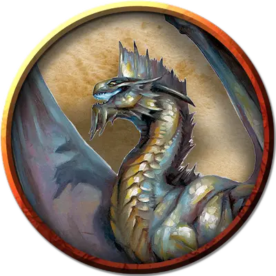

Взрослый серебряный дракон
Adult Silver Dragon
Огромный Дракон, законно-добрый

Класс Доспеха 19 (природный доспех)
Хиты 243 (18к12 + 126)
Скорость 40 футов, летая 80 футов
| мод | спас | ||
|---|---|---|---|
| СИЛ | 27 | +8 | +8 |
| ЛОВ | 10 | +0 | +5 |
| ТЕЛ | 25 | +7 | +12 |
| мод | спас | ||
|---|---|---|---|
| ИНТ | 16 | +3 | +3 |
| МДР | 13 | +1 | +6 |
| ХАР | 21 | +5 | +10 |
Навыки Восприятие +11, История +8, Магия +8, Скрытность +5
Иммунитет к урону холод
Чувства слепое зрение 60 футов, тёмное зрение 120 футов, пассивное Восприятие 21
Языки Общий, Драконий
Опасность 16 (15000 опыта)
Бонус мастерства +5
Среда обитания Город, Горы
Особенности
Легендарное сопротивление (3/день). Если дракон проваливает спасбросок, он может вместо этого сделать спасбросок успешным.
Действия
Мультиатака. Дракон может использовать Ужасающее присутствие. Затем он совершает три атаки: одну укусом, и две когтями.
Укус. Рукопашная атака оружием: +13 к попаданию, досягаемость 10 футов, одна цель. Попадание: 19 (2к10 + 8) колющего урона.
Коготь. Рукопашная атака оружием: +13 к попаданию, досягаемость 5 футов, одна цель. Попадание: 15 (2к6 + 8) рубящего урона.
Хвост. Рукопашная атака оружием: +13 к попаданию, досягаемость 15 футов, одна цель. Попадание: 17 (2к8 + 8) дробящего урона.
Ужасающее присутствие. Все существа на выбор дракона, находящиеся в пределах 120 футов от него и знающие о его присутствии, должны преуспеть в спасброске Мудрости Сл 18, иначе станут испуганными на 1 минуту. Существо может повторять этот спасбросок в конце каждого своего хода, оканчивая эффект на себе при успехе. Если спасбросок существа был успешным, или эффект на нём окончился, оно получает иммунитет к Ужасающему присутствию этого дракона на следующие 24 часа.
Оружия дыхания (перезарядка 5–6). Дракон использует один из следующих видов оружия дыхания.
• Холодное дыхание. Дракон выдыхает волну ледяного воздуха 60-футовым конусом. Все существа в этой области должны совершить спасбросок Телосложения Сл 20, получая урон холодом 58 (13к8) при провале, или половину этого урона при успехе.
• Парализующее дыхание. Дракон выдыхает парализующий газ 60-футовым конусом. Все существа в этой области должны преуспеть в спасброске Телосложения Сл 20, иначе станут парализованными на 1 минуту. Существо может повторять этот спасбросок в конце каждого своего хода, оканчивая эффект на себе при успехе.
Смена формы. Дракон магическим образом превращается в гуманоида или зверя, чей показатель опасности не превышает его собственный, или принимает свой истинный облик. Он принимает свой истинный облик, если умирает. Всё снаряжение, которое он несёт или носит, сливается с новым обликом или используется им (на выбор дракона). В новом облике дракон сохраняет мировоззрение, хиты, Кости Хитов, способность говорить, владения, Легендарные действия, действия логова, значения Интеллекта, Мудрости и Харизмы, а также это действие. Все остальные характеристики и умения заменяются характеристиками и умениями нового облика, за исключением классовых умений и легендарных действий нового облика.
Легендарные действия
Дракон может совершить 3 легендарных действия, выбирая из представленных ниже вариантов. За один раз можно использовать только одно легендарное действие, и только в конце хода другого существа. Дракон восстанавливает использованные легендарные действия в начале своего хода.
Обнаружение. Дракон совершает проверку Мудрости (Восприятие).
Атака хвостом. Дракон совершает атаку хвостом.
Атака крыльями (стоит 2 действия). Дракон бьёт своими крыльями. Все существа в пределах 10 футов от дракона должны преуспеть в спасброске Ловкости Сл 21, иначе получат дробящий урон 15 (2к6 + 8) и будут сбиты с ног. После этого дракон может пролететь на расстояние, не превышающее половину скорости полёта.
Логово
Серебряные драконы обитают среди облаков, создавая свои логовища среди укромных вершин холодных гор. Хотя многим из них комфортно в естественных пещерных комплексах или заброшенных шахтах, серебряные драконы всё же предпочитаю заброшенные форпосты гуманоидов. Каждый серебряный дракон мечтает о логове в заброшенной на вершине горы цитадели или далёкой башне, созданной давно погибшим волшебником.
Действия логова
При значении инициативы «20» (в случае ничьей проигрывает всем конкурентам) дракон совершает действие логова, чтобы вызвать один из следующих эффектов:
• Дракон создаёт туман, как будто наложив заклинание туманное облако [fog cloud]. Туман существует до показателя инициативы «20» в следующем раунде.
• Обжигающе холодные потоки воздуха дуют через логово в непосредственной близости от дракона. Все существа в пределах 120 футов от дракона должны преуспеть в спасброске Телосложении Сл 15, иначе получат урон холодом 5 (1к10). Газы и испарения разносятся ветром, незащищённое пламя тухнет. Защищённый огонь, например фонари, потухнут с 50 процентной вероятностью.
Местные эффекты
Регион, в котором есть логово легендарного серебряного дракона, искажается драконьей магией, которая создаёт один или несколько следующих эффектов:
• Один раз в день дракон может изменить погоду в пределах 6 миль с центром на своём логове. Дракон не обязан быть на открытом воздухе; во всём остальном эффект идентичен заклинанию власть над погодой [control weather].
• В пределах 1 мили от логова ветра поддерживают незлых существ, которые упали не из-за действий дракона или его союзников. Такие существа спускаются на 60 футов каждый раунд и не получают урон от падения.
• За несколько дней дракон может превратить облака или туман в своём логове в прочные как камень структуры и объекты, по своему желанию.
Если дракон умирает, изменённая погода возвращается в норму, согласно описанию заклинания, а прочие эффекты исчезают через 1к10 дней.
Опциональные правила
Драконы и врождённое колдовство. Драконы обладают врождёнными способностями к колдовству, и могут с возрастом осваивать новые заклинания при использовании этого опционального правила.
Молодые и более старые драконы могут накладывать количество заклинаний, равное их модификатору Харизмы. Каждое заклинание может быть наложено лишь один раз за день, не требуя материальных компонентов, и уровень заклинания не может превышать трети показателя опасности дракона (округляя в меньшую сторону).
Бонус к попаданию атак заклинаниями дракона равен его бонусу мастерства + его бонус Харизмы. Сл спасбросков от заклинаний дракона равна 8 + его бонус мастерства + его модификатор Харизмы. (Monster Manual)
Драконы и врождённое колдовство. Этот дракон от природы может накладывать пять заклинаний, 1/день каждое, и ему не требуются для этого материальные компоненты. Уровень каждого заклинания не может быть выше 5-го. Заклинание дракона, имеют Сл спасброска 18, и он имеет +10 к попаданию атаками заклинаниями.
Ниже приведен список предлагаемых заклинаний, но вы также можете выбрать заклинания, отражающие характер дракона. Дракон, который от природы накладывает заклинания друидов, ведёт себя иначе, чем тот, кто накладывает заклинания колдуна. Вы также можете дать дракону заклинания более высокого уровня, чем позволяет это правило, но такая настройка может повысить ПО дракона — особенно если эти заклинания наносят урон или накладывают состояния на цели.
• Маяк надежды [beacon of hope];
• Умиротворение [calm emotions];
• Удержание личности [hold person];
• Превращение [polymorph];
• Область истины [zone of truth]. (Fizban's Treasury of Dragons)
Персонализация дракона. Как уже говорилось в «Руководстве Мастера», вы можете настроить блок статистики любого дракона, чтобы отразить его уникальный характер. Незначительные изменения, такие как приведенные ниже, легко сделать, и они не влияют на ПО дракона. (Fizban's Treasury of Dragons)
Языки. Большинство драконов предпочитают говорить на Драконьем, но для общения с союзниками и приспешниками изучают Общий. Но, учитывая высокий Интеллект и продолжительный срок жизни, драконы могут легко выучить дополнительные языки. Вы можете добавить языки в блок статистики дракона.
Навыки. Большинство драконов владеют навыками Восприятие и Скрытность, а многие драконы владеют дополнительными навыками. Как и в случае с языками, вы можете изменить список навыков дракона (даже удвоить бонус мастерства), чтобы отразить его интересы и занятия. Вы также можете наделить дракона владениями инструментами, особенно если дракон проводит время в гуманоидной форме.
Заклинания. Опциональное правило «Бестиария» о том, чтобы сделать драконов с врожденным колдовством, — это простой способ добавить драконам разнообразия, не влияя на их ПО. В Главе 5 «Дракономикон» предлагаются списки заклинаний для разных видов драконов, но вы также можете выбрать заклинания, отражающие характер дракона. Дракон, который от природы накладывает заклинания друидов, ведёт себя иначе, чем тот, кто накладывает заклинания колдуна. Вы также можете дать дракону заклинания более высокого уровня, чем позволяет это правило, но такая настройка может повысить ПО дракона — особенно если эти заклинания наносят урон или накладывают состояния на цели.
Другие черты и действия. Вы можете заимствовать черты и действия у других монстров, чтобы придать дракону уникальную изюминку. Рассмотрим эти примеры:
Изменение формы. Вы можете решить, что дракон приобретает это действие в более раннем возрасте, чем обычно, особенно если вы хотите представить в своей кампании дракона в гуманоидной форме. (См. металлические драконы).
Поглощение урона. Вы можете решить, что красный или золотой дракон не только не получает урон от огня, но и исцеляется от него. (См. мясной голем [flesh golem]).
Облёт. Дракон - проворный летун, быстро вылетающий из зоны досягаемости врагов. (См. перитон [peryton]).
Подражание. Изображение персонажей или их союзников может стать забавным трюком для хитрого дракона. (См. кенку [kenku]).
Омоложение. Вы можете решить, что драконы в вашей кампании, будучи неотъемлемой частью Материального плана, почти невозможно уничтожить. Жизненная сущность дракона может храниться в яйце, из которого он появился на свет, в его кладе или в пещерном зале в центре мира, так же как сущность лича спрятана в филактерии. (См. лич [lich]).
Особые чувства. У большинства драконов есть слепое зрение и темное зрение. Вы можете улучшить зрение до истинного зрения или наделить дракона скоростью рытья или чувством вибрации. (См. зрение и свет).
Прокладывание туннеля. Эта особенность может быть присуща любому дракону, обладающему скоростью копания - он может двигаться сквозь твёрдую породу, оставляя за собой туннель. (См. бурый увалень [umber hulk]).
Описание
Дружелюбные и наиболее социальные из всех металлических драконов, серебряные драконы с радостью помогают добрым существа, которые нуждаются в этом.
Серебряный дракон переливается, как будто отлит из чистого металла, высокие глаза и шипастая окладистая борода делает его лицо благородным. Колючий венец поднимается высоко над головой, уходя вниз по шее до самого кончика хвоста. Сине-серая чешуя ящера переливаются серебряными бликами. С годами его цвет постепенно светлеет, до едва различимого серебряного оттенка. У старейших драконов совсем исчезают зрачки, а глаза становятся похожими на шары ртути.
Драконья добродетель. Серебряные драконы считают, что нравственная жизнь предполагает совершение добрых дел и непричинение незаслуженного вреда другим разумным созданиям. Они не берут на себя ответственность искоренить зло, как это делают золотые и бронзовые драконы, но они с удовольствием выступают против существ, которые осмеливаются совершать дурные поступки или вредить невинным.
Друзья маленьких народов. Серебряные драконы любят компанию других серебряных драконов. Но помимо сородичей, настоящие дружеские отношения развиваются и с гуманоидами, и многие серебряные драконы пребывают в гуманоидном облике столько же, сколько и в драконьем. Серебряный дракон принимает человеческое обличье мудрого старца или молодого странника, и с ним часто ходят смертные товарищи, с которыми он развил крепкие дружеские отношения.
Серебряные драконы вынуждены регулярно отходить от жизни среди людей, возвращаясь к своему истинному облику для спаривания и создания потомства, или же при необходимости защиты сокровищ и по личным делам. Поскольку многие теряют счёт времени, находясь вдали, они, по возвращению, могу обнаружить, что их друзья постарели или умерли. В итоге серебряные драконы часто поддерживают нескольких поколений гуманоидов в пределах одной семьи.
Уважение к человечеству. Серебряные драконы дружны с гуманоидами всех рас, но те, что живут недолго, такие как люди, более интересны для них, чем долгоживущие эльфы и дварфы. У людей есть стремления и жизнерадостность, что серебряные драконы находят увлекательным.
Накопление истории. Серебряные драконы любят хранить исторические реликвии гуманоидов. Это и большие груды монет, отчеканенные нынешними и павшими империями гуманоидов, и предметы искусств, и ювелирные украшения, придуманные многочисленными расами. Другие сокровища, которые составляют их клады, могут включать в себя целые корабли, мощи королей и королев, троны, драгоценные короны древних империй, хитроумные изобретения и монолитные скульптуры из руин павших городов.
См. дополнительно статью: "Бестиарий: Драконы"